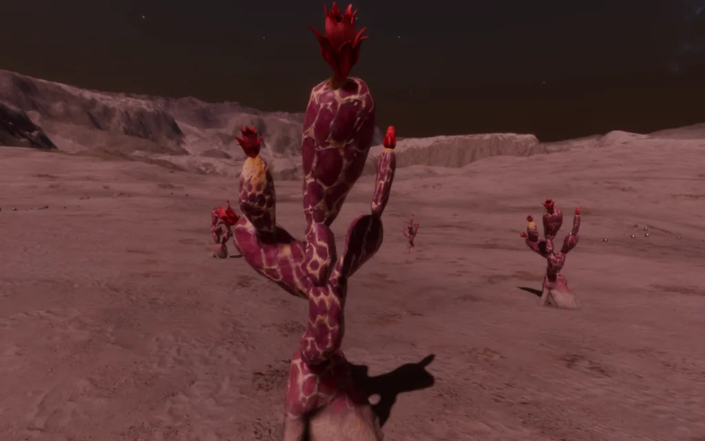
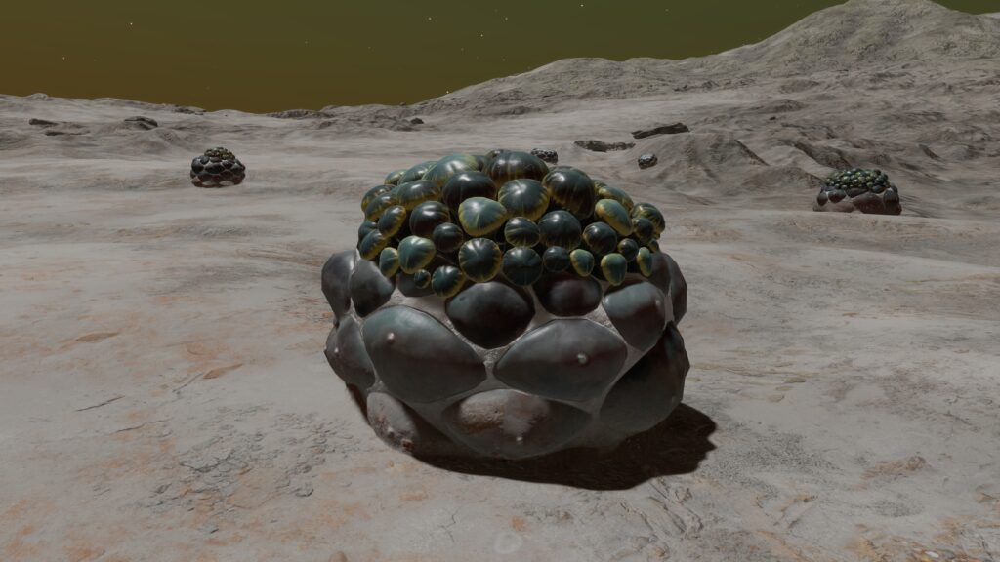
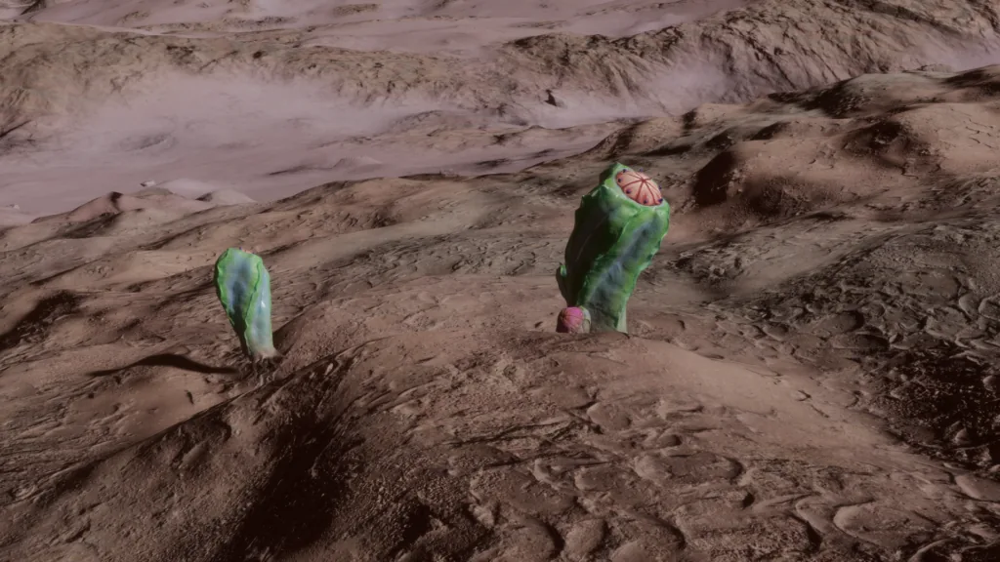
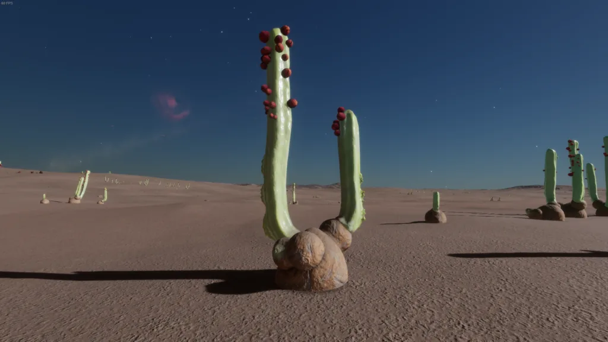
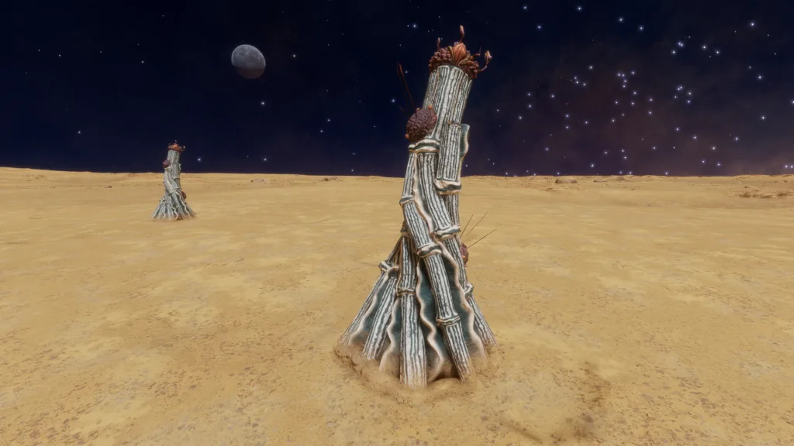

|  |  |  |  |
 |  |  |  |  |
 |  |  |  |  |
 |  |
A proud specimen of Cactoida Cortexum – Teal. Image courtesy of Cmdr. Arras DeCairo
Photosynthetic organisms that have adapted to extreme conditions by reducing their surface area to volume ratio, thereby protecting more sensitive tissues from exposure. The outer layer is formed from specialised light-transmitting cells. These are filled with an insulating hydrophobic layer, which helps to maintain core temperature and liquid retention. Deep, extensive root structures hold the organisms in place, and facilitate the extraction of trace minerals. Some Cactoida Species feature explosive seed distribution as a method of reproduction.
Cactoida seem to favour flat or slightly undulating terrain, with the exception of Peperatis which appears to be a hill and low mountainside-loving Species
Variant Determinant: Stellar Class
Stellar Class and Variant
| Stellar Class | O | B | A | F | G | K | M | L | T | TTS | Ae | Y | W | D | N |
| Variant | Gy | Gr | Ye | Te | Am | Mv | Or | Re | Oc | In | Tu | Sg |
Planetary Body Type: High Metal Content or Rocky
Atmosphere: Ammonia, Carbon Dioxide or Water
Gravity: Less than 0.29G
Minimum Colonial Separation: 300m
| Species Name | Percentage of recorded Cactoida Population | Vista Genomics Offer Price |
|---|---|---|
| Cactoida Cortexum | 24.31% | 3,667,600 |
| Cactoida Lapis | 34.84% | 2,483,600 |
| Cactoida Peperatis | 13.30% | 2,483,600 |
| Cactoida Pullulanta | 10.23% | 3,667,600 |
| Cactoida Vermis | 17.32% | 16,202,800 |

A Species of Cactoida that can reach over three metres in height. They are composed of multiple growths that sprout sealed pods at their peaks, which open up to distribute seeds.
Planetary Body Type: High Metal Content (23%) or Rocky (77%)
Atmosphere: Carbon Dioxide
Volcanism: None
Temperature Pressure Gravity
| Minimum | Average | Mode | Maximum | |
| Temperature (K) | 158.67 | 185.87 | 181.00 | 196.74 |
| Pressure (atm) | 0.001186936 | 0.062561121 | 0.045157855 | 0.098690679 |
| Gravity (G) | 0.04 | 0.18 | 0.19 | 0.27 |
Galactic Arm Preference: Orion-Cygnus Arm including Odin’s Hold and Galactic Centre

This Species of Cactoida appears as a squat growth with a latticed upper surface, which eventually produces a cluster of seed pods.
Planetary Body Type: High Metal Content (30%) or Rocky (70%)
Atmosphere: Ammonia
Volcanism: Insignificant
Temperature Pressure Gravity
| Minimum | Average | Mode | Maximum | |
| Temperature (K) | 160.00 | 168.10 | 168.00 | 176.64 |
| Pressure (atm) | 0.000986962 | 0.002199953 | 0.001116724 | 0.013255091 |
| Gravity (G) | 0.04 | 0.18 | 0.14 | 0.28 |
Galactic Arm Preference: Sagittarius-Carina Arm including Odin’s Hold and Galactic Centre

This Cactoida Species appears as a swollen five-sided growth, reaching over two metres high and topped with an intersected crown. It is only found in ammonia atmospheres.
Planetary Body Type: High Metal Content (19%) or Rocky (81%)
Atmosphere: Ammonia
Volcanism: Insignificant
Temperature Pressure Gravity
| Minimum | Average | Mode | Maximum | |
| Temperature (K) | 160.00 | 168.17 | 171.00 | 176.66 |
| Pressure (atm) | 0.000986994 | 0.002214040 | 0.001041191 | 0.013386672 |
| Gravity (G) | 0.04 | 0.17 | 0.14 | 0.28 |
Galactic Arm Preference: Scutum-Centaurus Arm including Odin’s Hold and Galactic Centre

This Species of Cactoida, exclusively found in carbon dioxide atmospheres, has a globular base, from which extend vertical cylinders that can reach over four metres. Rounded pods grow in clusters along the cylinders, which break open to scatter seeds.
Planetary Body Type: High Metal Content (26%) or Rocky (74%)
Atmosphere: Carbon Dioxide
Volcanism: None
Temperature Pressure Gravity
| Minimum | Average | Mode | Maximum | |
| Temperature (K) | 180.00 | 186.10 | 181.00 | 195.39 |
| Pressure (atm) | 0.025763644 | 0.063119349 | 0.039868221 | 0.098688414 |
| Gravity (G) | 0.04 | 0.19 | 0.2 | 0.27 |
Galactic Arm Preference: Perseus Arm including Ryker’s Hope and Galactic Centre

This Cactoida Species appears as a tall collection of cylinders linked by an undulating membrane and topped with a spiky crown. They often have a spiny life-form attached that is thought to form a symbiotic relationship with the larger organism, although the nature of this is not understood. Vermis is the most heat-tolerant of Cactoida, as is to be expected given its requirement for a Water atmosphere, and far exceeds other Species of the Genus.
Planetary Body Type: High Metal Content (25%) or Rocky (75%)
Atmosphere: Water
Volcanism: Insignificant
Temperature Pressure Gravity
| Minimum | Average | Mode | Maximum | |
| Temperature (K) | 160.04 | 424.13 | 420.00 | 449.99 |
| Pressure (atm) | 0.001119110 | 0.082420931 | 0.068573559 | 0.098691160 |
| Gravity (G) | 0.04 | 0.05 | 0.05 | 0.28 |
Galactic Arm Preference: No Preference
| | | | |
| | | | |
| | | | |
| |